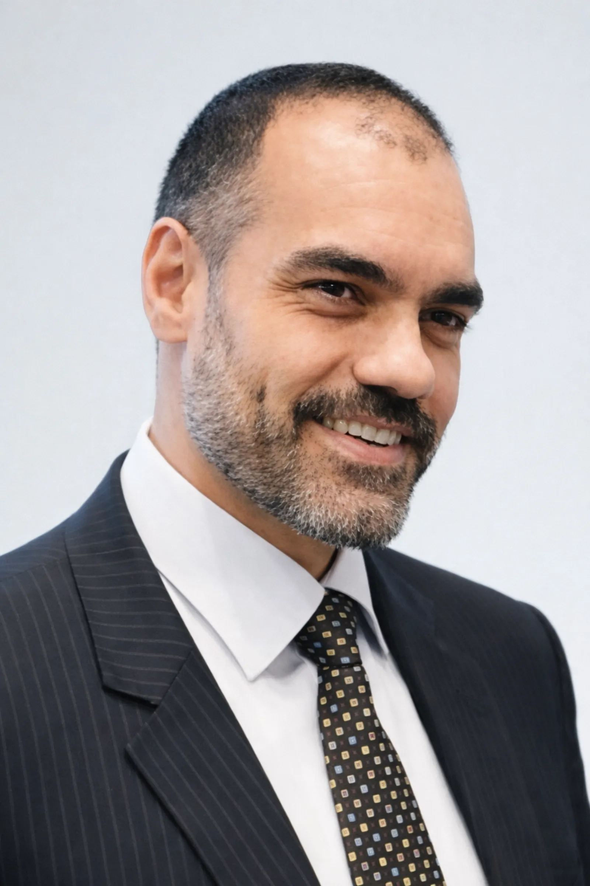

Понять
Принять сложность своего опыта с внимательным, структурным взглядом и уважением к внутреннему ритму.
Профессиональная консультация
Профессиональный Аналогист
Аналогические дисциплины — это система знаний и инструментов, позволяющая установить прямой контакт с эмоциональной и бессознательной частью личности. Благодаря этому подходу можно восстановить внутренний баланс, свободу и благополучие, соединяя логическое мышление с глубокими эмоциями. Каждый день мы сталкиваемся с конфликтом между разумом и чувствами. Аналогические дисциплины, разработанные Стефано Бенемельо, психологом и исследователем, дают практические инструменты для гармонизации этих двух частей и раскрытия личного потенциала. Они помогают расшифровывать эмоциональный и невербальный язык, который мы используем бессознательно и который отражает наши подлинные потребности.

Non cade foglia che l'inconscio non voglia
Il Метод
Аналогическая работа развивается как путь осознанного прочтения опыта, позволяющий увидеть связи, символы и динамики, которые часто остаются незаметными при поверхностном взгляде.
Принять сложность своего опыта с внимательным, структурным взглядом и уважением к внутреннему ритму.
Распознавать символические связи и соответствия, которые помогают видеть события шире и глубже.
Преобразовывать полученные инсайты в практическое направление, усиливая ясность, устойчивость и последовательность.
Обо мне
Я занимаюсь эмоциональным благополучием через подход, который объединяет разум, эмоции и тело. Моя работа заключается в расшифровке эмоциональных и системных языков человека, чтобы помочь ему восстановить баланс и подлинность в личной, межличностной и профессиональной жизни. Я сотрудничаю с учреждениями, ассоциациями и школами, работая в частных и социально-медицинских контекстах, чтобы продвигать культуру, основанную на самопознании и личностном росте.
Путь обучения, посвящённый аналогической науке, символическому прочтению опыта и углублению процессов личной осознанности.
Terminato il percorso di studio che mi ha permesso di comprendere il modo emozionale da cui deriva l'essenza del nostro e altrui comportamento, e che mi ha permesso di trasformare la passione per questa preziosa conoscenza in una vera e propria professione, ho completato la formazione Top Professional presso l'Università Popolare "Stefano Benemeglio" delle Discipline Analogiche, assistendo e collaborando con Stefano Benemeglio durante le sue sedute e le attività di formazione in tutta Italia: seminari, workshop, laboratori ed eventi utili a coronare il percorso formativo e a perfezionare le conoscenze acquisite nei Sistemi Induttivi Benemegliani®, le leggi dell'inconscio, Comunicazione Analogica®, il linguaggio emotivo e non verbale, Filosofia Analogica®, la coscienza, il sogno e la libertà interiore e Fisioanalogia®, il legame tra corpo ed emozioni.
Questa esperienza mi ha permesso di integrare teoria e pratica, sviluppando un approccio efficace e personalizzato al benessere della persona.
Консультационная работа для тех, кто проходит этапы изменений, ищет интерпретационное направление или хочет проходить свой путь с большей ясностью.
Каждый путь рождается из сочетания строгости, чувствительности и способности видеть уникальность человека, не сводя сложность к общим формулам.
Credo che la felicità e la libertà partano dalla conoscenza profonda di sé. Il mio obiettivo è aiutarti a riconoscere e armonizzare le tue emozioni, per vivere in modo più consapevole, autentico e sereno.
Porto avanti la Filosofia Analogica come strumento di crescita, equilibrio e realizzazione personale.
Il Путь
L'Analogista è un professionista dell'aiuto che ti accompagna a conoscere le emozioni e a dialogare con la tua istanza emotiva. Attraverso la Comunicazione Analogica®, i Sistemi Induttivi Benemegliani®, la Filosofia Analogica® e la Fisioanalogia®, aiuto le persone a:
Durante le sedute, accompagno la persona in un percorso di riconoscimento e riequilibrio tra la parte logica "So cosa dovrei fare" e quella emotiva "Mi blocco e non ci riesco". Il risultato è un cambiamento reale e duraturo, generato dalla collaborazione tra mente e cuore.
Сессия
Работа с Аналогистом не ограничивается слушанием: она направлена на конкретное действие. Сессия состоит из основных этапов:
Come si svolge
Attraverso la lettura dei segnali non verbali come movimenti, micro-espressioni o gesti inconsapevoli, l'Analogista interpreta ciò che l'inconscio comunica e aiuta la persona a trasformarlo in consapevolezza.
Approfondimento
Il mio lavoro è rivolto a chi desidera migliorare la qualità della propria vita emozionale e relazionale. L'intervento analogico può essere utile in caso di:
Offro percorsi individuali orientati alla gestione autonoma del benessere, fornendo strumenti pratici per mantenere equilibrio e serenità nel tempo.
Частые вопросы
Alcune risposte essenziali per comprendere il taglio del lavoro e le modalità del percorso.
L'Analogista è un professionista che ti aiuta a ritrovare il tuo equilibrio emotivo. Il suo compito è far sì che i tuoi pensieri e le tue emozioni vadano d'accordo, eliminando quei blocchi interiori che spesso portano all'autosabotaggio. Questa professione nasce dagli studi di Stefano Benemeglio, uno psicologo che ha dedicato la sua vita a capire le emozioni umane.
Durante le sedute, l'Analogista ti aiuta a scoprire cosa si nasconde nel tuo inconscio e a far collaborare la tua volontà con le tue emozioni. Usa diversi metodi, tra cui la comunicazione non verbale e il dialogo diretto con l'inconscio.
L'Analogista può aiutarti in tanti ambiti diversi perché le emozioni influenzano ogni aspetto della nostra vita.
Si distingue da psicologi e psicoterapeuti per il suo modo unico di lavorare con l'inconscio e l'emotività, sia a livello teorico che pratico.
Durante la seduta, l'Analogista non si limita ad ascoltare.
Lavora insieme alla persona per capire cosa vuole la parte razionale ("devo cambiare la situazione") e cosa dice invece la parte emotiva ("ho paura di non farcela").
Il compito dell'Analogista è trovare una soluzione che funzioni per entrambe le parti.
Durante la seduta, l'Analogista non si limita ad ascoltare.
Lavora insieme alla persona per capire cosa vuole la parte razionale "Devo cambiare la situazione" e cosa dice invece la parte emotiva "Ho paura di non farcela".
Il compito dell'Analogista è trovare una soluzione che funzioni per entrambe le parti.
Контакты
Свяжитесь со мной для консультации
Email seranti.analogista@gmail.com
Телефон +393395954816
Ricevo
a Roma in Via Urbino, 43 e in Via dell'Amba Aradam, 27,
a Santa Maria di Leuca (Le) in Via Dante Alighieri, 95.